La revolución de los datos en Soccer Analytics
Seminario Fútbol Analytics UAI 2019
Ismael Gómez Schmidt
Frontman datofutbol.cl
¿Qué veremos?
- Breve contexto histórico
- Categorías según tipos de datos:
- Información que contienen
- ¿Cómo conseguir los datos?
- Objetivo o uso típico (ejemplos de aplicaciones)
- Información que contienen
- Desafíos
- ¿Cómo llega Chile a la Copa América?
Charles Reep: Pionero en recolección de datos de fútbol
- En la década del 50 inició un conteo riguroso de tiros, goles, pases, quites, etc. de partidos de la liga inglesa.
- Algunos insights de su paper "Skill and Chance in Association Football" (Journal of the Royal Statistical Society, 1968) con 15 años de datos:
- 1 gol cada 9 tiros
- Casi la mitad de los goles ocurrían cerca del área luego de una recuperación
- Pocos pases consecutivos
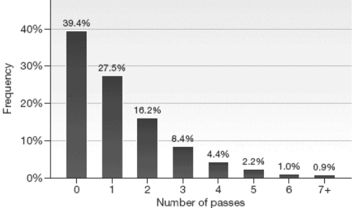 "The Numbers Game - Anderson & Sally" Note: Horizontal axis shows the number of successful passing moves, where 0 means that a pass attempt was immediately intercepted; 1 means one successful pass before possession lost and so on. Numbers atop bars indicate the percentage of moves in a match. Reep and Benjamin found only 8.5 per cent of passing movements contained more than three passes. - A partir de estos resultados reafirmó su visión de juego que solo buscaba la efectividad.
Contiene:
- Información general de partidos (Fecha, Estadio, Árbitro, Torneo, Equipos, Alineación, etc.)
- Resultados (1T, 2T)
- Cantidad y momento de incidencias (Goles, Tiros, Tarjetas, Corners, Penales, Off-sides, etc.)
- Tablas de posiciones (Copas, PJ, PG, PE, PP, GF, GC, %R, etc.) y Rankings
- Información de jugadores (Edad, Altura, Nacionalidad, Valor $ en el mercado, Minutos jugados, etc.)
- Otros (Ej: Factores de pago de casas de apuestas, Habilidades de jugadores)
¿Dónde se consiguen?


Objetivo y/o Aplicaciones
- Estadística descriptiva
- Dar un contexto previo o descripción posterior a un partido o torneo
- Infografías, comparaciones, rankings, récords, etc.
- Modelos de probabilidades
Ejemplos
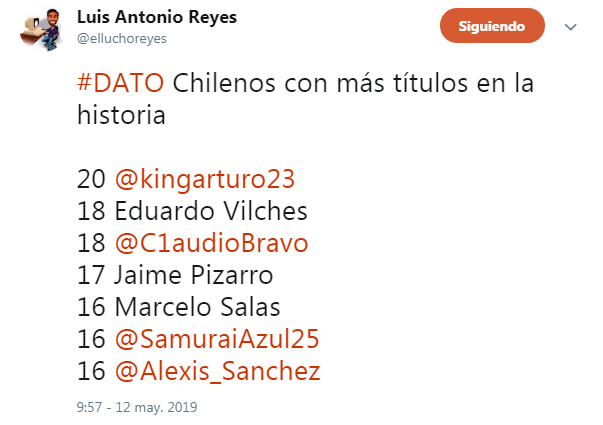 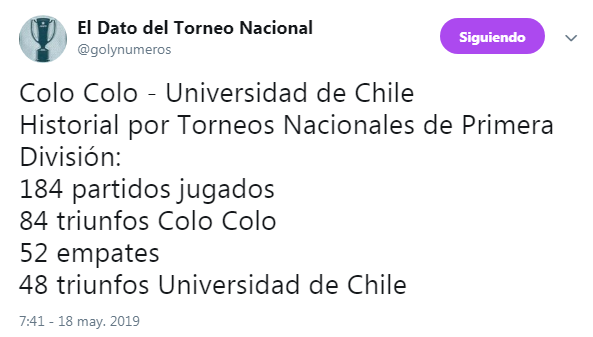
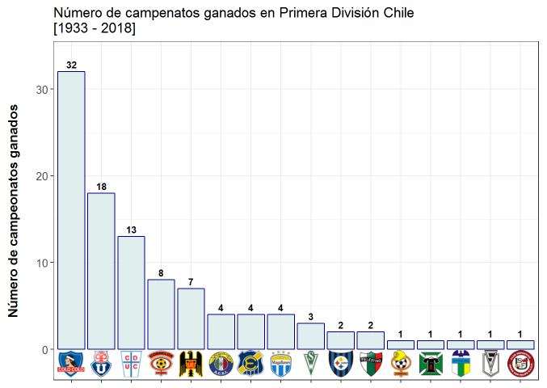 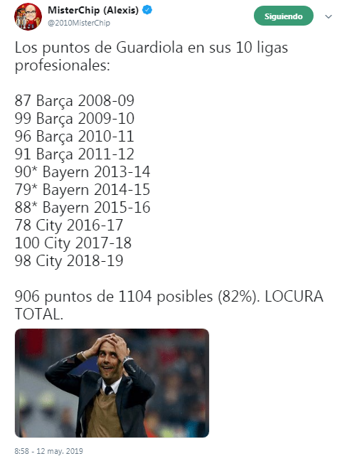
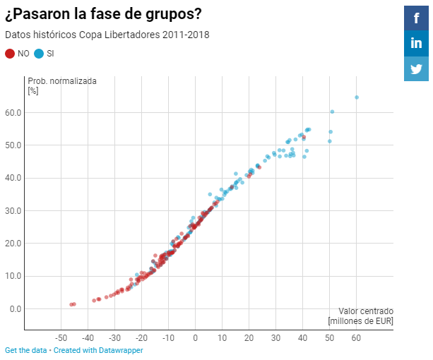 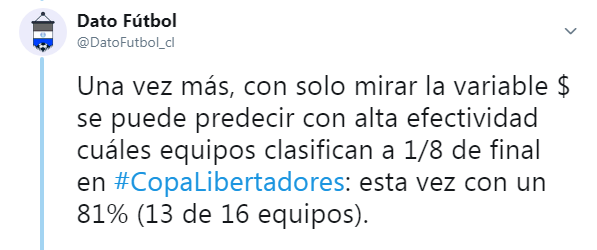
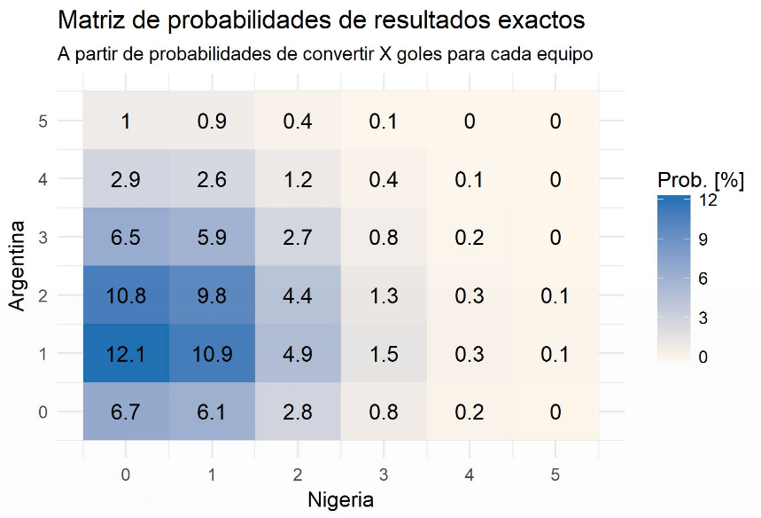 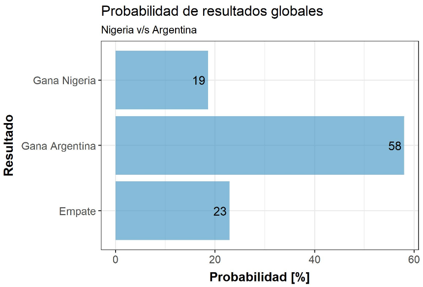
Contiene:
- Momento y
Ubicación(x, y) de eventos (tiros, pases, quites, dribleos, presión defensiva, etc.)
- Jugadores involucrados en los eventos
- Detalles adicionales asociados (parte del cuerpo, N° de posesión, resultado del evento, altura, dimensiones de la cancha, etc.)
- Métricas especializadas
¿Dónde se consiguen?


Objetivo y/o Aplicaciones
- Análisis espacial y direccional de eventos (Shotmaps, Passing Networks, Heatmaps y Comparaciones espaciales de distintos eventos, etc.)
- Performance grupal e individual (por partido y/o temporada, por posiciones, ponderado por minutos de juego, Radar plots, etc.)
- Creación de métricas específicas (xG, xA, xChain, xBuildUp, xThreat, Pases por minuto de posesión, Longitud media de pases, Velocidad media de secuencias de pases, etc.)
- Otros (Ej: Contextualizar temporal y espacialmente series de eventos, Descripción más profunda de partidos y estilos de juego)
Ejemplos
Expected Goals (xG)
Shotmap

xG Timeline
Passing networks

Event heatmaps & position maps
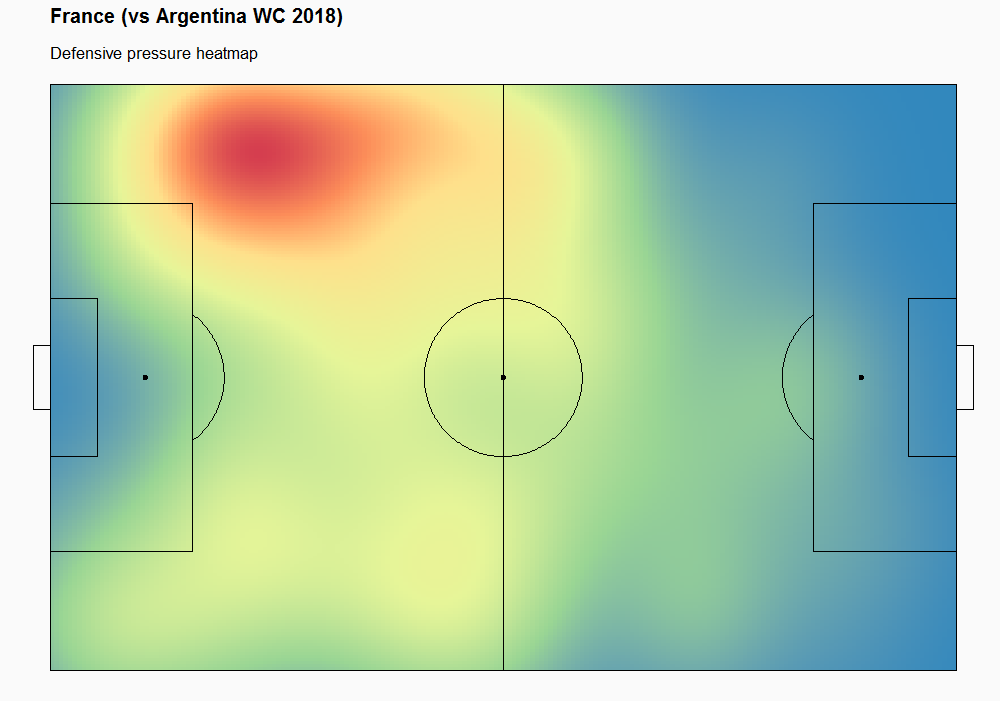 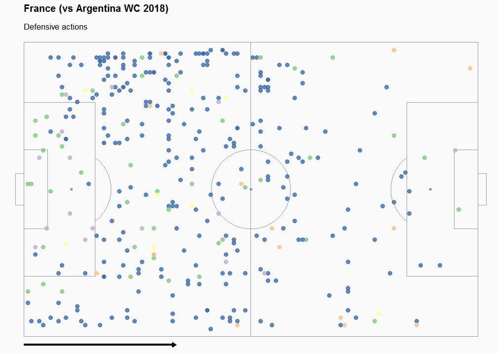
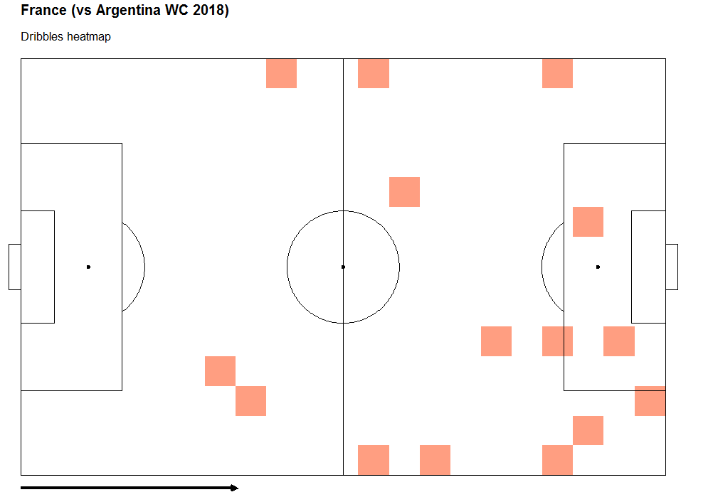 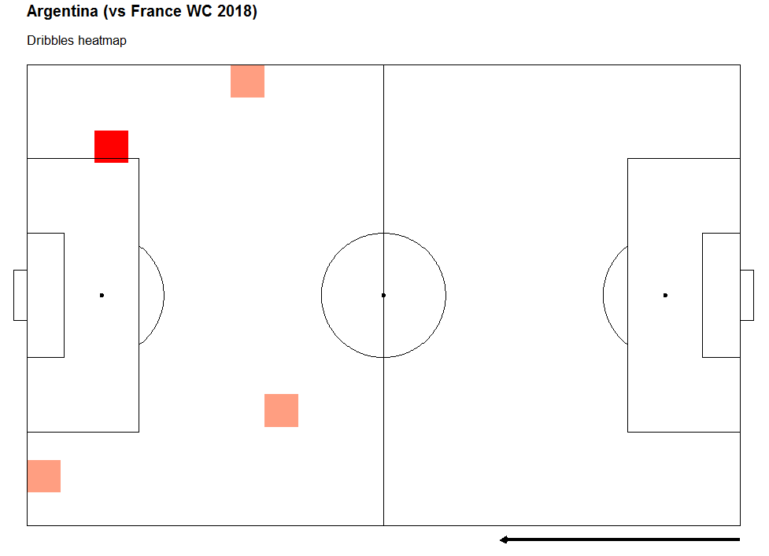
Defensive coverage
Positional analysis & comparison
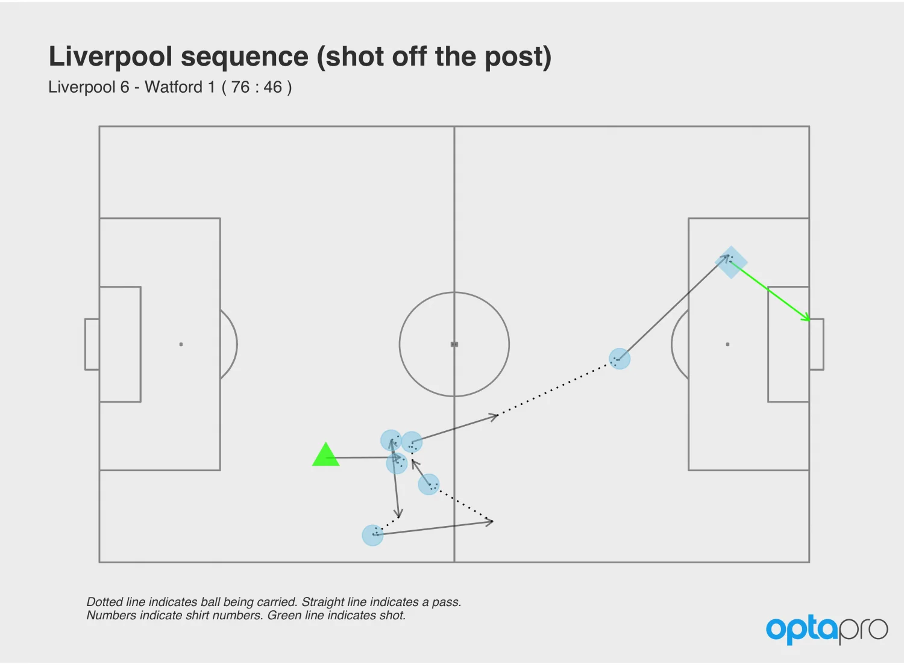 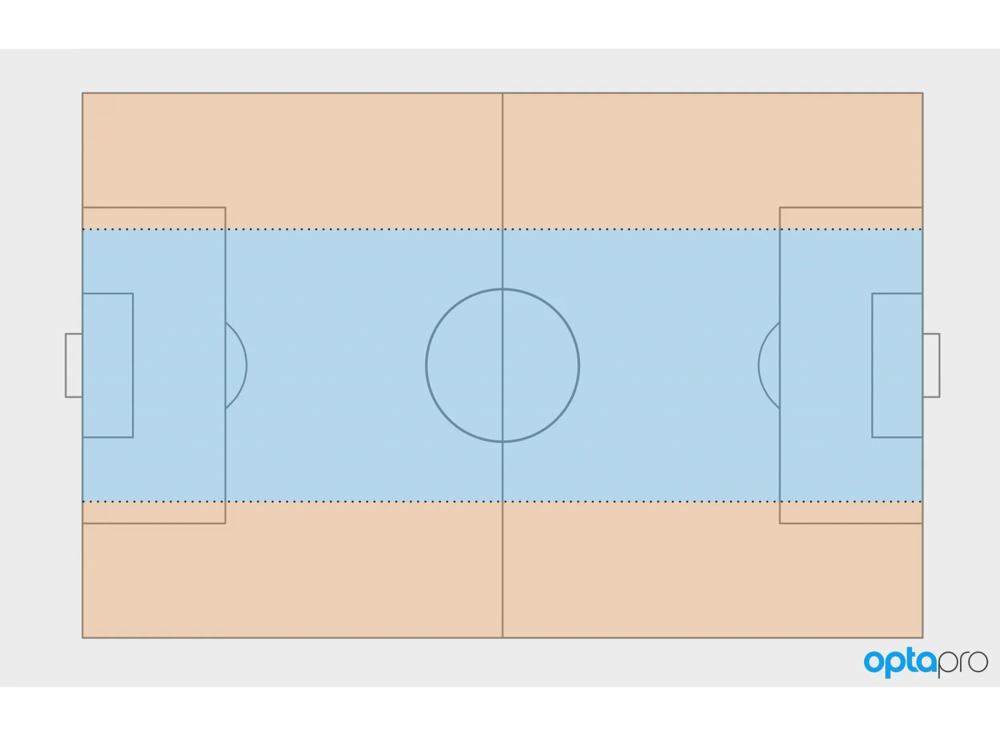
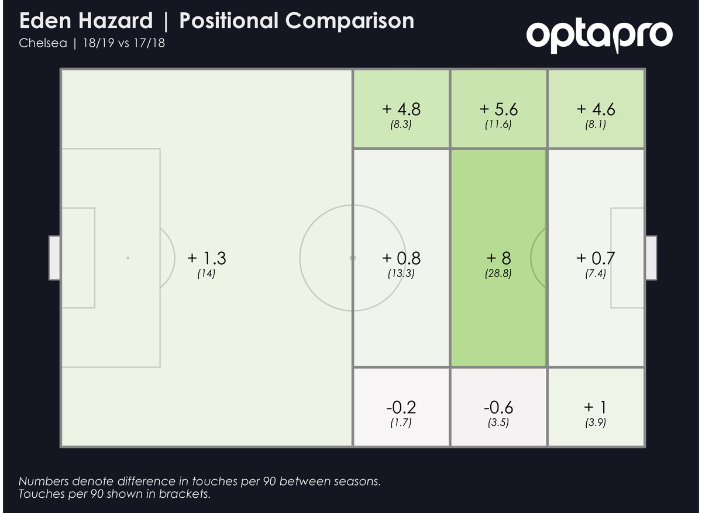 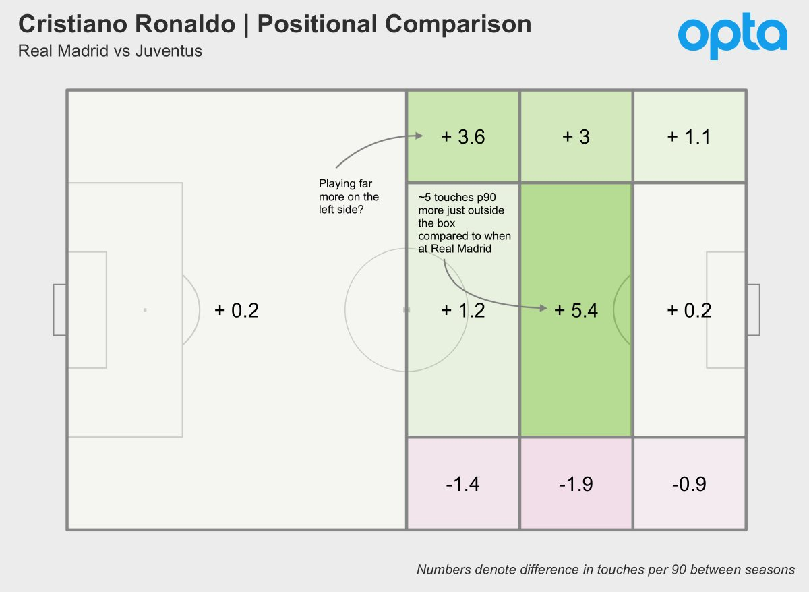
Individual performance: xG + xA
Individual performance: comparison + xGChain
Individual performance: p90 + radar plots
xT
Contiene:
- Ubicación (x, y) de cada jugador y el balón a cierta frecuencia (Ej: 10 Hz)
- Información complementaria (nombre y número de camiseta de jugadores, dimensiones de la cancha, equipos, tiempo de juego, etc.)
¿Dónde se consiguen?

Objetivo y/o Aplicaciones
- Recrear jugadas (Revisión de jugadas claves y/o errores, dar indicaciones a jugadores, etc.)
- Análisis espacio-temporal de ambos equipos (Convex-Hull, Voronoi, etc., Dominio espacial de un equipo sobre otro, Ganancia de área relevante)
- Métricas de desempeño (Distancia recorrida, Velocidad, Heatmaps, etc.)
- Uso en competencia y en entrenamiento (Cruce con datos fisiológicos: prevención de lesiones)
- Otros (Ej: Análisis y valoración de juego sin balón)
Ejemplos
New update of soccerAnimate function:
— Dato Fútbol (@DatoFutbol_cl) 5 de junio de 2019
+ voronoi diagrams
+ method setting [convexhull, voronoi, clean]
Next step: calculate/show metrics each sample & globally (areas+lenghts+%s)
Thanks to @thomasp85 for such a great packages #gganimate #ggforce
Code:https://t.co/xqah1jhZ82 pic.twitter.com/jQW0LbxZuH
Experimenting with new metrics using Voronoi diagrams: the number near the goal is the % of the relevant area "owned" by the attacking team. The number goes up from 15% to 30% with the key pass of the play. Useful to calculate goal contribution? pic.twitter.com/3bbaNBG4bP
— Last Row (@lastrowview) 1 de diciembre de 2018
Flujo de trabajo típico
Flujo de trabajo típico
Desafíos
- 1) Que todo el medio se actualice en el tema: Cuerpos técnicos + Dirigentes + Periodismo deportivo + Analistas + Academia + Hinchas. Equipos y Selección, a nivel formativo y adulto, masculino y femenino.
2) Acceso a los datos:
- Conocimiento + Difusión -> Interés + Confianza -> Financiamiento.
- Proyectos de democratización (Ej: Superliga Argentina, La Liga España, Statsbomb)
3) Estandarización en el registro (Fifa validation) y en el cálculo de métricas.
4) Trabajo interdisciplinario entre Cuerpo Técnico, Equipo Médico y Analistas.
¿Cómo llega Chile a la Copa América?
- Análisis exploratorio y comparativo del desempeño de las selecciones que jugarán la Copa
- Considerando datos de los partidos amistosos del último año (posterior al mundial de Rusia)
- Datos de Wyscout (prueba gratuita de 14 días) [Categorías 1 y 2].
Data source: Wyscout; Data viz: Dato Fútbol
Análisis ofensivo
En comparación a sus rivales de la Copa, Chile en sus últimos partidos:
- Ha generado hartas ocasiones de gol (tiene el 2do
xG_p90 más alto), pero no concreta (tiene el peor valor de la razónGoals_p90 / xG_p90). Ha realizado varios tiros (
shot_p90mayor al promedio y con el más altoxG_per_shot) pero con unaon target accuracyde las más bajas (35%). Es decir, no le achunta al arco.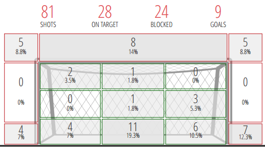
Incluso considerando que patea desde cerca.
Análisis defensivo
En comparación a sus rivales de la Copa, Chile en sus últimos partidos:
- Su
posesiónestá sobre el promedio, pero es el segundo equipo querecibe más golespor cada 90 minutos.
- Sus rivales tienen una cantidad mayor al promedio de
contraataques que terminan con tiros al arco.
- Está dentro de los 7 equipos que realiza mayor
pressing, pero de esos es el 2do al cual más le generantirosy goles. A pesar de que "está bien" en cuanto a recuperaciones, intercepciones, duelos defensivos, cruces, duelos aéreos, pérdidas de balón, etc. Se podría mejorar enrecuperaciones en el mediocampo.